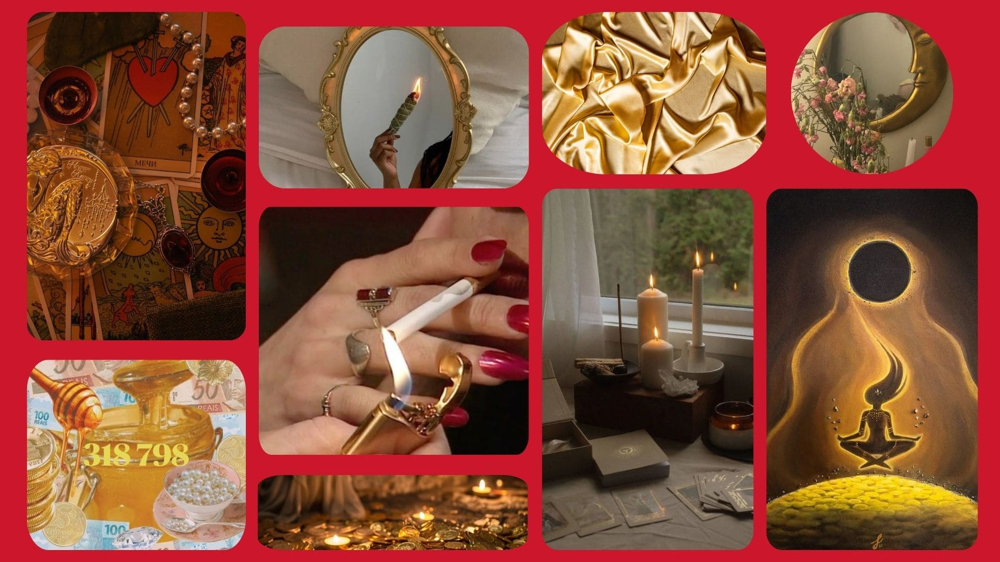

Los oros
Los Oros, representando el elemento Tierra, están vinculados al mundo material y tangible. Hablan sobre aspectos como las finanzas, la salud física, el trabajo y nuestra capacidad para construir nuestra realidad con nuestras propias manos. Están asociados con lo mundano, las posesiones, la abundancia y la fertilidad, reflejando todo lo relacionado con lo concreto y lo material.
A través de los Oros, también se refleja nuestra sensación de estabilidad, seguridad y solidez, tanto en lo físico como en lo emocional. Estos arcanos están profundamente conectados con el ego, nuestra identidad y cómo nos percibimos a través de lo que tenemos y logramos.
Cuando los Oros aparecen en una tirada, especialmente en abundancia, indican una energía más lenta y meticulosa en acción. Señalan la necesidad de enfocarse en los asuntos materiales con un enfoque práctico y realista, manteniendo siempre los pies bien plantados sobre la tierra. Es un recordatorio de que, aunque la energía de los Oros se mueve a un ritmo pausado, su influencia es duradera y fundamental para lograr estabilidad y éxito a largo plazo.
